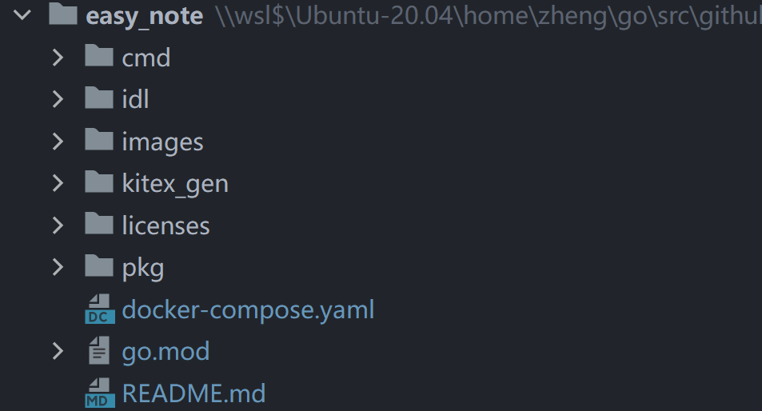
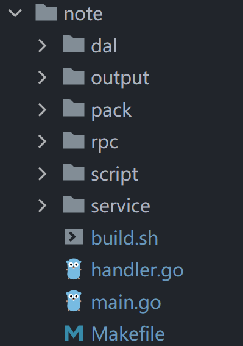
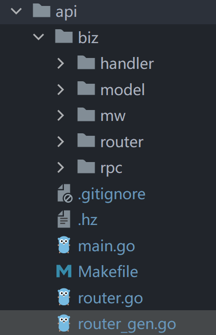

简介
easy_note为一个hertz+kitex+gorm样例项目。
相关资料
Kitex官方文档：Kitex | CloudWeGo
Hertz官方文档：Hertz | CloudWeGo
Hertz with thrift样例项目：hertz-examples/hz/thrift at main · cloudwego/hertz-examples (github.com)
Gorm官方文档：GORM 指南 | GORM - The fantastic ORM library for Golang, aims to be developer friendly.
组成

easy_note包含三个服务：
- note：提供笔记的curd服务
- user：提供用户的注册和登录服务
- api：与上述两个服务通信，对客户端提供http访问服务
结构
- cmd：三个服务的实现
- idl：定义服务间的通信内容
- kitex_gen：kitex自动生成的服务间通信代码
- pkg：定义一些常量和配置信息
note服务
dal

dal文件夹包含数据库处理函数。其中的db/init.go初始化gorm连接，db/note.go定义了用gorm进行数据库操作的几个函数，包含笔记的crud。外层的dal/init.go进行了简单封装。总而言之，dal包中基于gorm封装了note表的crud操作函数，也包含gorm的初始化函数。
上图为gorm的模型定义。gorm使用结构体名的蛇形复数作为表名，字段名的蛇形作为列名，结构体还需要包含一个gorm.Model，其中包含主键和修改时间信息。

因此，gorm使用结构体的名称和字段来确定要操作的表，不需要显式的建表操作。
kitex的代码构建流程
在阅读note服务的kitex代码之前，先了解kitex的代码构建流程。
第一步：编写IDL文件
创建IDL文件，编写接口和服务。
使用kitex生成项目代码：
1
kitex -module $(go module名) -service $(服务名) $(IDL文件名)
生成如下所示的代码结构：
1
2
3
4
5
6
7
8
9
10
11
12
13
14
15
16
17
18
19.
├── build.sh
├── echo.thrift
├── go.mod
├── handler.go
├── kitex.yaml
├── kitex_gen
│ └── api
│ ├── echo
│ │ ├── client.go
│ │ ├── echo.go
│ │ ├── invoker.go
│ │ └── server.go
│ ├── echo.go
│ ├── k-consts.go
│ └── k-echo.go
├── main.go
└── script
└── bootstrap.shbuild.sh是编译脚本handler.go是编写服务处理的地方，kitex生成了服务处理函数的框架，供开发者填写kitex_gen是kitex生成的代码，不需要修改main.go是主函数，可根据具体业务来自定义初始化逻辑，如将服务注册到etcd服务发现中心script/boostrap.sh是启动服务的脚本，在编译后的output文件夹也会生成完全相同的一份
第二步：编写服务逻辑
在
handler.go中填入函数1
2
3
4
5
6
7
8// EchoImpl implements the last service interface defined in the IDL.
type EchoImpl struct{}
// Echo implements the EchoImpl interface.
func (s *EchoImpl) Echo(ctx context.Context, req *api.Request) (resp *api.Response, err error) {
// TODO: Your code here...
return &api.Response{Message: req.Message}, nil
}服务端需要其他变量时，应该可以在EchoImpl结构体中定义。
第三步：服务端编译运行
1 | sh build.sh // 编译 |
第四步：编写客户端
1 | package main |
echo.NewClient的echo是包名，"kitex-learn"为使用kitex生成代码时传入的服务名。c.Echo的Echo才是服务名，表示调用客户端实例c的Echo服务。
note的kitex代码
- 主目录的
idl/note.thrift定义了note的服务接口。服务名为NoteService，包含5个服务：创建、删除、更新、查询、批量获取。
main.go
main.go的逻辑与示例代码略有不同，最大的区别是使用了etcd作为服务发现中心。在微服务应用中，运行的服务实例集会动态变更。实例有动态分配的网络位置。因此，为了让客户端向服务发出请求，它必须使用服务发现机制。服务发现的关键部分是服务注册中心。服务注册中心是一个可用服务实例的数据库。etcd是一个分布式K/V数据库，本项目使用etcd作为服务发现中心。
main函数执行的任务：
- 在etcd服务发现中心注册note服务
- 用gorm初始化数据库连接
- 使用etcd服务发现解析user服务，创建了一个访问user服务的客户端，用于拉取用户列表
- 启动一个OpenTelemetry性能监视工具实例，用于监测note服务性能
- 启动note服务
handler.go
handler.go中每个功能的实现都大同小异，以查询功能QueryNote为例进行解析。
首先是验证req的数据的有效性：
1 | if err = req.IsValid(); err != nil { |
这里用到的是thriftgo的一个插件：validator。当thrift文件定义了每个接口变量的数据范围时，validator插件会在kitex_gen文件夹中生成验证数据正确性的相应代码。
validator文档：Thrift Validator | CloudWeGo
在进行数据处理后，调用service文件夹中的对应函数进行具体处理：
1 | notes, total, err := service.NewQueryNoteService(ctx).QueryNoteService(req) |
具体处理函数一方面用到了gorm接口操作数据库，另一方面用到了rpc文件夹中创建的客户端，连接到user服务，从user服务读取用户列表：
1 | noteModels, total, err := db.QueryNote(s.ctx, req.UserId, req.SearchKey, int(req.Limit), int(req.Offset)) // 使用gorm |
处理完成后，使用pack文件夹中定义的返回类型或Note类型构造返回值：
1 | if err != nil { |
总结一下每个文件夹的作用：
- service文件夹定义每个服务的具体处理逻辑
- rpc文件夹定义访问user服务拉取用户列表的逻辑
- pack文件夹定义服务的返回值
handler.go还涉及到一个内容：函数参数中的ctx context.Context变量。context.Context是Go标准库中定义的一个接口类型，从1.7版本中开始引入。其主要作用是在一次请求经过的所有协程或函数间传递取消信号及共享数据，以达到父协程对子协程的管理和控制的目的。需要注意的是context.Context的作用范围是一次请求的生命周期，即随着请求的产生而产生，随着本次请求的结束而结束。
api服务
hertz with thrift的代码构建流程
第一步：创建thrift IDL
- IDL中指定请求的类型和URL
URL语法
先了解URL的通用语法：
1 | <scheme>://<user>:<password>@<host>:<port>/<path>;<params>?<query>#<frag> |
scheme: 协议，常见的有 http（80），https（443），mailto，ftp（21），rtsp，rtspu，file。
user：用户名。
password： 密码。
host：主机。
port： 端口。
params: 参数。通常为
key=value。query：查询参数或查询字符串。
frag: 片段（在浏览器中会被解析为
window.location.hash）。
IDL如下：
1 | namespace go hello.example |
HelloMethod服务以路径为/hello的GET方法提供访问，请求中的Name变量被赋值为URL的query当中的name字段，例如：curl --location --request GET 'http://127.0.0.1:8888/hello?name=tom'是一个GET请求，其中问号后面的部分为query，name字段的值为tom。
第二步：创建hertz项目
1 | // GOPATH 下执行 |
生成的文件目录如下：
1 | . |
第三步：修改handler
handler文件夹中的hello_service.go为处理函数，文件夹名称hello/example是thrift IDL的namespacemodel文件夹定义了处理函数用到的数据结构和相关逻辑，无需且不能修改。router文件夹定义了路由注册函数，其中只有middleware.go文件允许修改，可以定义中间件。- 主目录的
router.go中可以定义自定义路由规则。/ping路由就是在这个文件当中定义的。 - 主目录的
router_gen.go为包装函数，依次调用router文件夹和router.go，分别注册由IDL定义的路由和自定义路由。